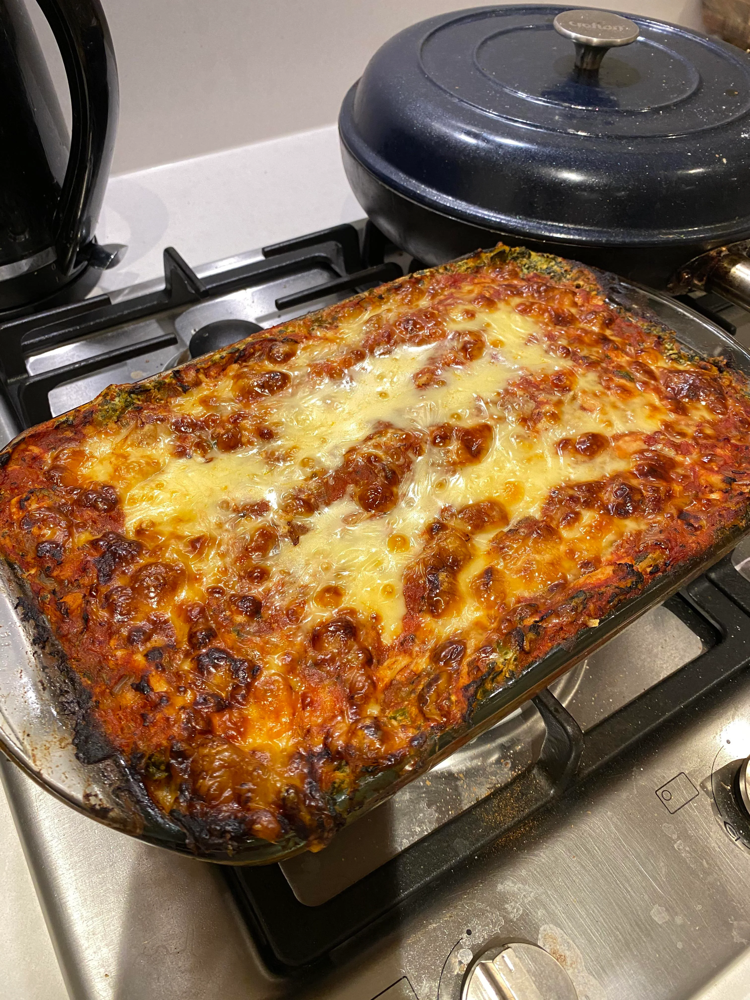

Lasagna

Description
This lasagna is fairly heavy containg 3200 calories per batch!
The prep time for the lasagna is roughly 30 minutes and takes a
total of 90 minutes to complete and serve and makes 6 servings
Pioneered by Greg Doucette
Ingredients
- 9 regular lasagna sheets
- 8 slices fat-free cheese
- 500g frozen spinach, thawed, drained
- 250g zucchini, sliced lengthwise
- 455g Lean ground turkey, 93% fat-free
- 1000g of Pasta sauce
- 125g Onions, diced
- 2 Tsp garlic, minced
- 80ml Water
Macro-Nutrients
- calories: 3200
- Fat: 74g
- Carbs: 406g
- Fiber: 39g
- Protien: 209g
Cooking Directions
- Pre-heat the oven to 400 ° F (204°C).
- Cook the lasagna according to package instructions, and set aside.
- Saute garlic and onions on a pan over medium-high heat until
golden brown.
- Remove the onions and garlic and set aside in a large bowl.
- In the same pan, cook the lean ground turkey until fully cooked.
When fully cooked, remove from the pan, drain/rinse out any
excess liquid, and add to the bowl of onions & garlic.
- Add pasta sauce to the turkey mixture and mix well.
- In a separate bowl, mix Ricotta cheese and spinach.
- Spray a casserole dish with cooking spray and build the lasagna.
Spread ¼ cup of the turkey sauce on the bottom of the casserole
dish. Place lasagna noodles over the sauce. Lay zucchini on top of
the noodles. Spread ½ of the ricotta cheese/spinach mix on top
of the zucchini. Spread ½ of the turkey pasta mix over the ricotta.
Repeat with another layer of lasagna noodles and zucchini. Spread
the remaining pasta sauce on top, and the place fat-free cheese
on top of that.
- Cover with foil (spray with cooking spray) and place in the oven.
After 30 minutes, remove the foil and bake for another 30 minutes.
- Let cool (20 minutes) before cutting and serving.